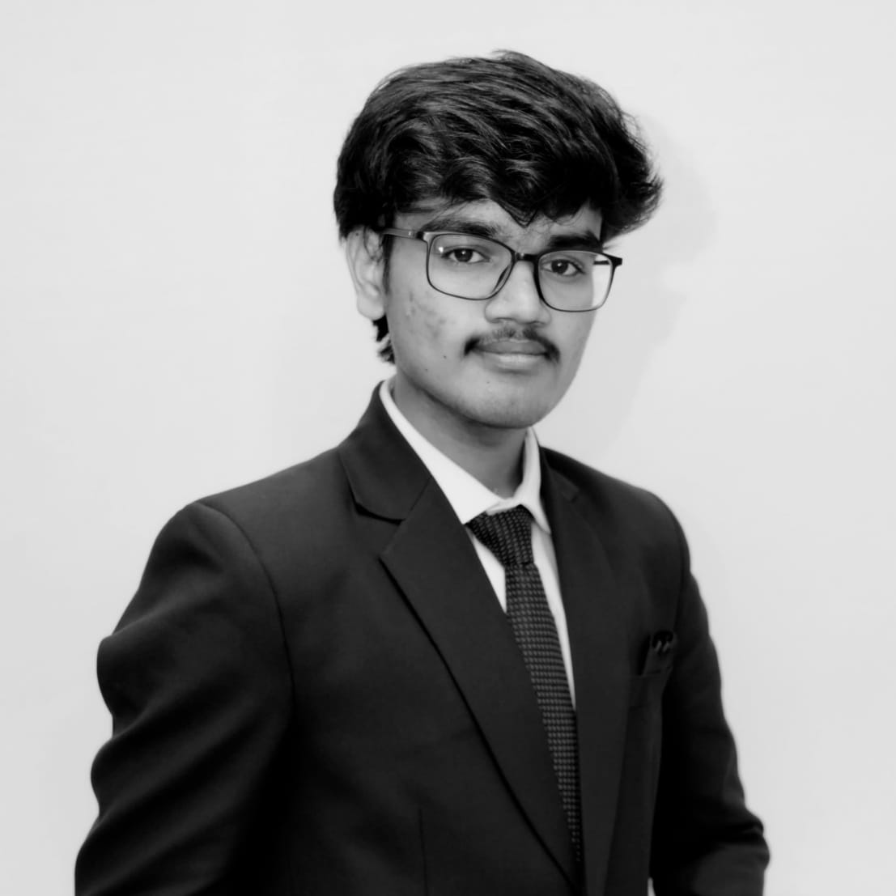

S. Sai et al.,
IEEE IGARSS 2024
arXiv | IEEE Xplore

A. Sen,S. Sai, C. Mallick, S. Roy and U. Sen
IEEE IGARSS 2024
arXiv | IEEE Xplore

Sen, A., Sen, U., Paul, M., Padhy, A. P.,Sai, S., Mallik, A., & Mallick, C.
arXiv (2025).
arXiv
|
Sripadam Sujith Sai I am Sripadam Sujith Sai, a recent Chemical Engineering graduate (Class of 2025) from NIT Rourkela, with an exchange term at IIT Hyderabad. My research interests are in computer vision, deep learning, and human–robot interaction. I’ve had the opportunity to work with:
Earlier, I worked on developing machine learning models for CO₂ capture and conversion. Outside research, I enjoy playing badminton and brainstorming on creative technology applications (a few ideas are born from this). Email / CV / Google Scholar |

|
Achievements
|
Publications and Preprints |
|
|
QGAPHnet : Quantum Genetic Algorithm Based Hybrid QLSTM Model for Soil Moisture Estimation.
S. Sai et al., IEEE IGARSS 2024 arXiv | IEEE Xplore |
|
|
HBO-DEViT: Vision Transformer Based Attention-Guided Evolutionary Architecture for Ship-Iceberg Categorisation in Arctic Sar Images.
A. Sen,S. Sai, C. Mallick, S. Roy and U. Sen IEEE IGARSS 2024 arXiv | IEEE Xplore |
|
|
QGAPHEnsemble: Combining Hybrid QLSTM Network Ensemble via Adaptive Weighting for Short Term Weather Forecasting.
Sen, A., Sen, U., Paul, M., Padhy, A. P.,Sai, S., Mallik, A., & Mallick, C. arXiv (2025). arXiv |